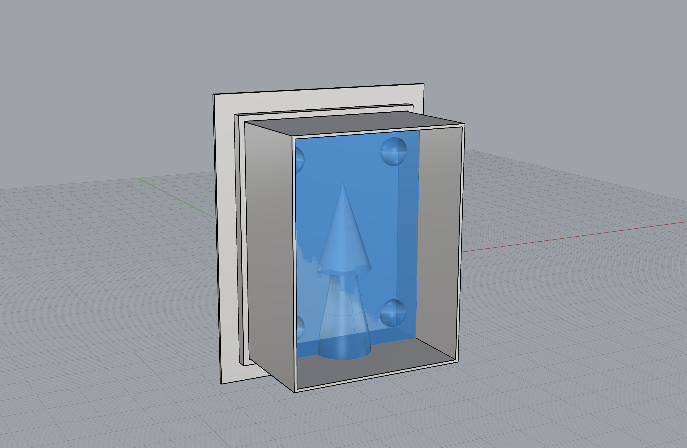

Silicon mold setup
May 11th, 2024
Final model for a tiny cone (3cm tall, 2cm diameter). Surrounding padding needed for Oomoo is a minimum of 1.3 cm, the model's is closer to 2 cm. One mistake I made was making my 3D model thicker than it needed to be, resulting in slightly longer prints and more material used.
When I looked online, some people took apart or destroyed the container holding the mold and the silicon when it was done curing (they used wood or paper with the mold hot glue gunned to it). I was worried that if I joined the walls to the print that I would have a hard time removing the silicon after, so I printed a two-part box, one as the rim and the other a tray holding both the rim and mold print. Took a few tries to get the prints fitting tightly enough but not too tight it couldn't be removed. I couldn't remember what the samples were like that Prof Nadya had brought in.


I hope my guess pays off because I ended up using twice as much Oomo than needed so I probably won't have enough for a redo. After seeing how much material was needed and the work put into this, I wished I had done something more interesting than a cone! Next time!
I was able to get a consistent purple color and I scraped the sides and bottom of the container for any residual streaks of the pink or blue. This is where I found it helpful to use a very clear container to find these streaks. I also needed to swap out my vinyl gloves for a new pair at each step to keep the process clean (i.e. from opening and stirring each individual substance to the final mixing).
When I poured the Oomoo in, I saw a few bubbles rise to the surface. I got a little concerned I had mixed the Oomoo too much... I tried to bang out the bubbles by tapping the molds on the table.
Now we just need to wait 6 hours ... This is where I wished I got the Oomoo 25 instead whose curing time is 75 min. Today was also a hot day in Seattle with temperatures reaching a high of 28 celcius whereas the ideal curing temperature is 23 celsius. Without a way to moderate the temperature in the room (I don't have AC) I hope this won't adversely affect the mold.
Mold results and plaster pours
May 12th, 2024
With a little push around the edges, the molds came out without much fuss.


Below left: I re-used the trays I printed earlier to help distribute the pressure of the elastics. Below right: I'm trying to fill the plaster only up to the begining of the pipe. This is where I wished I had made the diameter closest to the mold much smaller. Tapped the plaster mix agasint the table top and then again once poured into the molds.

First cast.

I was worried about air pockets but saw several examples of molds without any. I should have added vents regardless because there were a couple at the top of the circle. I manually cut a couple out with my xacto.


{kind=link}
{kind=link}
{kind=link}
{kind=link}
{kind=link}
{kind=link}
{kind=link}
My earlier mistake of mixing too much Oomoo resulted in a happy accident. I used the leftover amount to create a random mold of 3D spare parts. Whenever I have leftover plaster, I would pour some of it into this stray mold. This turned out to be helpful in gauging how hardened the plaster was inside the mold.
{kind=link}
{kind=link}